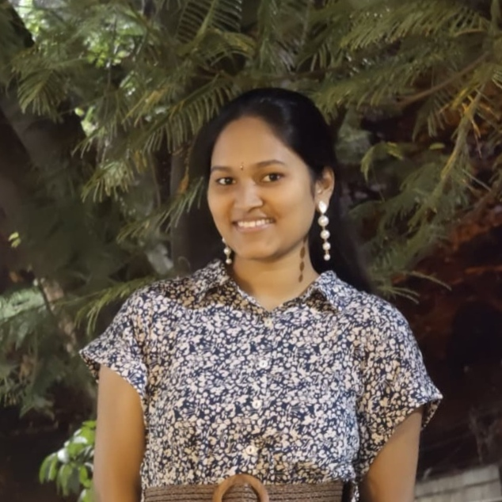

Borra Bhavitha
B.Tech in Mathematics and Computing Indian Institute of Science, Bengaluru
About
I'm a B.Tech student in Mathematics and Computing at the Indian Institute of Science, Bengaluru. My interests lie in Machine Learning, Deep Learning, Computer Vision, and AI research, and I enjoy approaching problems with a mathematically grounded, research-driven mindset. I'm drawn to understanding how models learn and generalize, and I like translating that understanding into practical, well-engineered solutions.
Academic Background
-
B.Tech in Mathematics and Computing
2024 – Present (Expected 2028)Indian Institute of Science, Bengaluru
CGPA: 6.1
Core Coursework: Algorithms and Programming, Analysis and Linear Algebra, Computer Systems and Architecture, Discrete Mathematics, Linear Algebra and Multi Variable Calculus, Numerical Methods, Data Structures and Algorithms, Probability and Statistics, Introduction to Artificial Intelligence and Machine Learning, Introduction to Algebraic Structures, Introduction to Automata Theory and Computability, Introduction to Basic Analysis.
-
Class XII
2024Narayana Junior College, Kanuru
98.3%
JEE Advanced Rank: 6611
JEE Mains Rank: 1616
-
Class X (CBSE)
2022Kennedy High School, Kanuru
95.2%
Experience
Engineering Intern
May 2026 – July 2026TANUH AI Center for Excellence in Healthcare
Contributing to AI-driven healthcare research under the TANUH AI Center of Excellence by designing, developing, and benchmarking machine learning and deep learning models for mammography-based breast tissue density classification. Research areas include domain adaptation, self-supervised learning, semi-supervised learning, explainable AI, medical image classification, and model generalization.
Projects
Self-Supervised Learning: Representation Analysis
March 2026 – April 2026PyTorch
Implemented SimCLR, MoCo, VICReg, and Barlow Twins. Analyzed robustness to label noise, representation quality, and training dynamics using linear probing and embeddings. Observed improved generalization over supervised learning and sensitivity to early training corruption.
Breast Tissue Density Classification
May 2026 – July 2026PyTorch
Carried out during engineering internship. Implemented and benchmarked ML/DL models for breast tissue density classification from mammograms. Designed domain adaptation, self-supervised, semi-supervised, and contrastive frameworks. Developed DANN-based pipelines (DenseNet121, RegNetY-8GF, NFNet-F3, MAE-ViT, DINOv2, Barlow Twins, Mean Teacher, SupCon). Evaluated SVM/ELM and end-to-end models. Implemented TransMIL. Used Grad-CAM++ and Attention Rollout. Built scalable PyTorch pipelines.
Skills
- Programming: Python, C (basics), Bash
- ML/DL: PyTorch, Scikit-learn, NumPy, Pandas, Deep Learning, CNNs, Vision Transformers, Self-Supervised Learning, Semi-Supervised Learning, Domain Adaptation, Contrastive Learning
- Computer Vision: OpenCV, Feature Extraction, Image Classification, Data Augmentation, Explainable AI
- Core CS: Data Structures & Algorithms, Operating Systems, Recursion, Problem Solving, Competitive Programming
- Systems/Tools: Python-C Integration, Memory Management, Algorithm Optimization, Git, VS Code, pydicom
- Certifications: Introductory course on Quantum Computing (CDAC & IIT Roorkee)
Extra-curricular Activities
- Event Coordinator: Telugu Samskrutika Samiti (TSS) (2025–Present) and Pravega Culturals–Dance (Lasya, 2025)
- Volunteer: IISc Open Day (2025: “Match the Emoji” facial recognition demo; 2026: Tower of Hanoi recursion visualization) and Pravega 2024
- Mentorship: Tutored Class 11 and 12 students preparing for JEE
- Creative: Design Team and Dancer (Classical Kuchipudi, Freestyle)